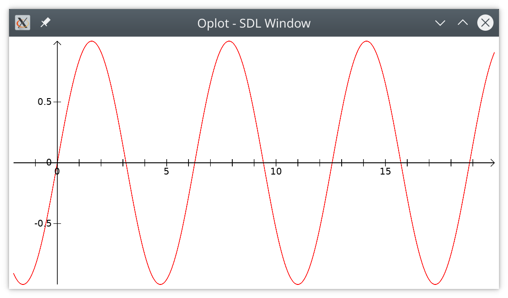

Module Oplot
Simple mathematical plotter library for ocaml with fast graphics (opengl), LaTeX display, and high quality vector output (xfig, postscript or PDF)


Source available on github.
OplotSimple mathematical plotter library for ocaml with fast graphics (opengl), LaTeX display, and high quality vector output (xfig, postscript or PDF)
Source available on github.
Oplot can be used in the toplevel. First load the library with
#use "topfind"
#thread
#require "oplot"You may open the Oplot.Plt module for easy access to all plot functions.
open Oplot.PltDraw the graph of the sine function with
let p = plot sin (-2.) 20.
let a = axis 0. 0.;;
display [ Color red; p; Color black; a ]This will open a window with the graphics, which should look like this:
Press F for fullscreen toggle, CTRL-S for saving the image, and ESC or Q to close the window. Press h to see the list of active keys.
Of course you can play with it:
let rec sh i =
if i == 0 then []
else
let p =
line_plot_f
(fun x -> sin (x +. (float_of_int i /. 50.)))
0. 20. ~pas:0.05
in
let c =
color (float_of_int i /. 50.) (1. -. (float_of_int i /. 50.)) 0.
in
c :: p :: sh (i - 1)
;;
display (sh 50)module Points : sig ... endTypes of points
This module contains all plotting functions.
module Plt : sig ... endMain Oplot functions
Oplot internal functions are useful for creating user interfaces.
module Internal : sig ... end